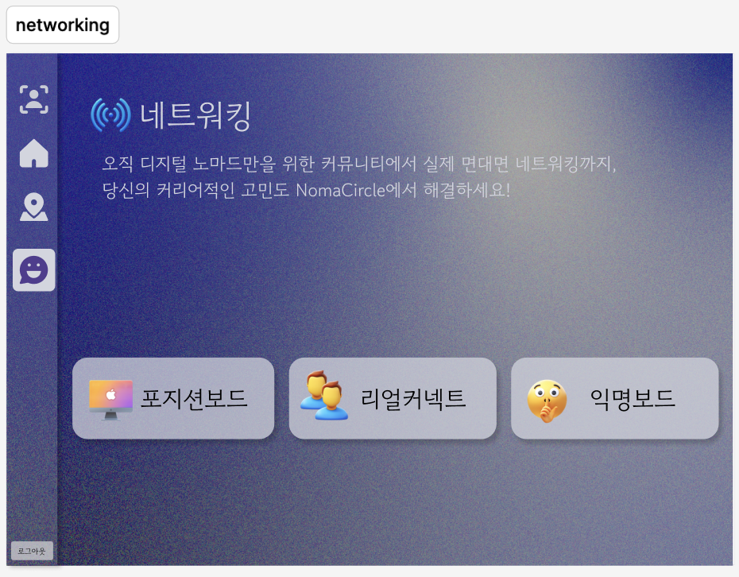
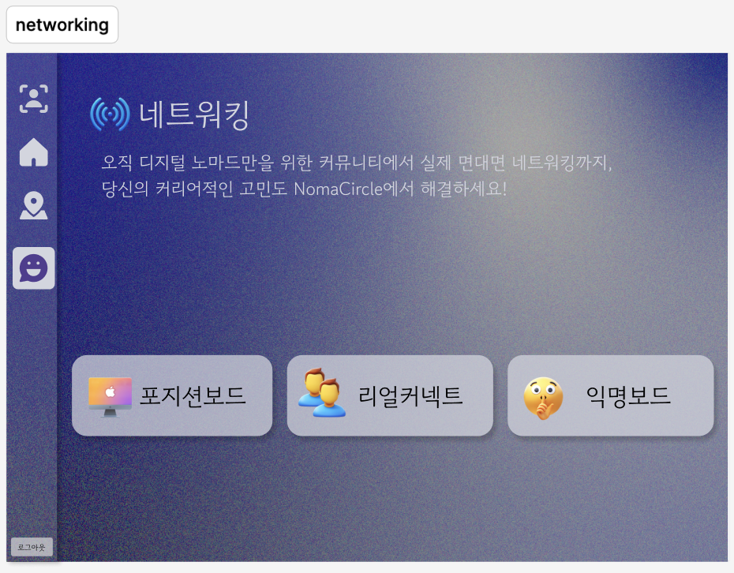
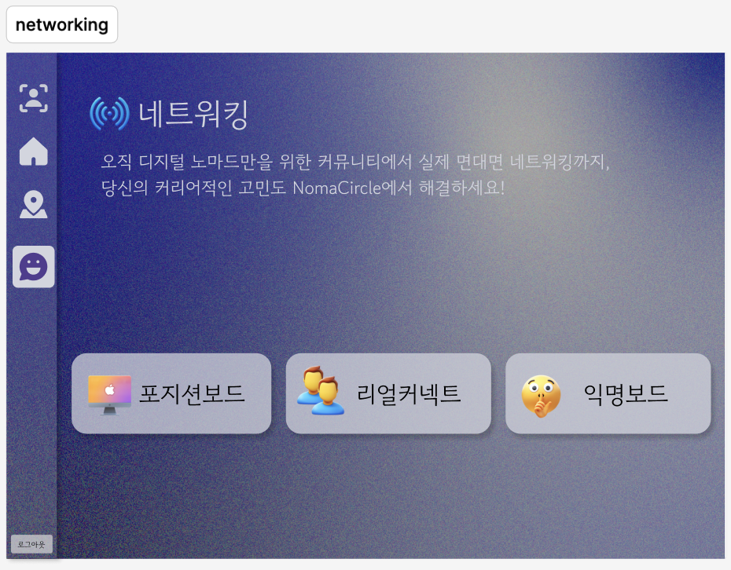

We created this video as our final project for the Creativity and Visual Expression class. Before explaining the video itself, let me first share the inspiration behind it. Recently, on social media, we noticed the coexistence of two contrasting phenomena. On one hand, narcissism, where people express the desire to share their most perfect and beautiful selves with others, and on the other hand, self-loathing, where people dislike themselves and are overly conscious of how they are perceived by others. We found it intriguing how these opposing concepts could exist within the same society, and that thought sparked the idea for our video.
Thus, we decided to use a mask as a medium and made narcissism the main theme of our video. In the video, the mask initially seems to serve as a tool for the protagonist to love themselves too much, perceiving themselves as more beautiful and decorated than their actual appearance. However, as the story progresses, it becomes clear that the protagonist is not seeing themselves honestly. Instead, they become aware of their flaws and use the mask to cover them, focusing on how others see them, revealing that they are just a persona adjusted to meet others' expectations. Additionally, by overlaying idealized images of eyes, nose, and lips on the protagonist's face, we wanted to portray the desire to conform to society’s standards of beauty and to project oneself into that ideal. We aimed to highlight the distorted self-love and, in the end, reveal that the protagonist, like anyone else, is not truly honest with themselves, yet still loves this version of themselves.
Through this video, we hope to deliver a message of liberation from the consciousness of others to the audience. Although, realistically, it may be impossible in South Korean society not to be influenced by others' views, norms, and conventions, we wanted to encourage people to take a step outside of that box. By not being overly concerned with such constraints and by looking at themselves genuinely, we hope to inspire a healthier sense of self-love.

NomaCircle is a responsive web service developed during a hackathon at Google Developer Groups Campus on Sogang.
I designed it to help the growing number of digital nomads find ideal workspaces and connect with like-minded individuals.
I participated in this project as the UX/UI designer, responsible for crafting the user flow and building the visual system.
I also ensured that every screen aligned with our core concept:
"The intersection of every digital nomad’s path."
From the beginning, I focused on turning this idea into a meaningful visual experience.
The landing page sets the tone with a grain-textured gradient background and a custom-designed logo—an abstract “N” enclosed in an orbit and arrow—symbolizing movement, direction, and the cyclical nature of remote work.
This gives users the sense that they are not just entering a platform but starting a journey.
For the “Finding Place” feature, which allows users to locate cafés and workspaces near them, I designed a clean card-based UI.
Each card provides a quick overview with ratings, business hours, and images for easy comparison.
We used the Naver Maps API to implement the map interface, enabling location tracking and interactive markers.
I designed the layout so users could explore the map while smoothly interacting with the UI.
A glassmorphism-style overlay was used for the review modal to let users leave feedback without breaking their flow.
Beyond finding spaces, NomaCircle also functions as a community platform.
I created three types of networking boards—Position Board, Real Connect, and Anonymous Board—each supporting a different style of interaction.
The Position Board was visually categorized by roles like Backend, Frontend, Marketer, Creator, and Founder, with unique icons for quick recognition.
The interface encourages clean and collaborative communication, with features like comments and optional anonymity.
The overall design was inspired by the nomadic lifestyle.
I chose a deep navy and violet gradient as the main color scheme to convey calmness and focus, with a modern and forward-looking feel.
Clear sans-serif typography improves readability, while emojis and expressive icons help set the tone and bring warmth to the user experience.
Throughout the hackathon, I worked in **Figma** to create components, iterate on prototypes, and stay in sync with developers.
Even under time pressure, I focused on keeping the design consistent and emotionally resonant.
My goal wasn’t just to make something look good, but to create a system where function meets feeling—a space that feels thoughtful and connected.
This project reinforced my belief in the power of design to bridge the physical and digital.
With NomaCircle, I aimed to build more than a workspace finder.
I wanted to create a visual identity and experience that leaves a lasting mark on the journeys of remote workers around the world.